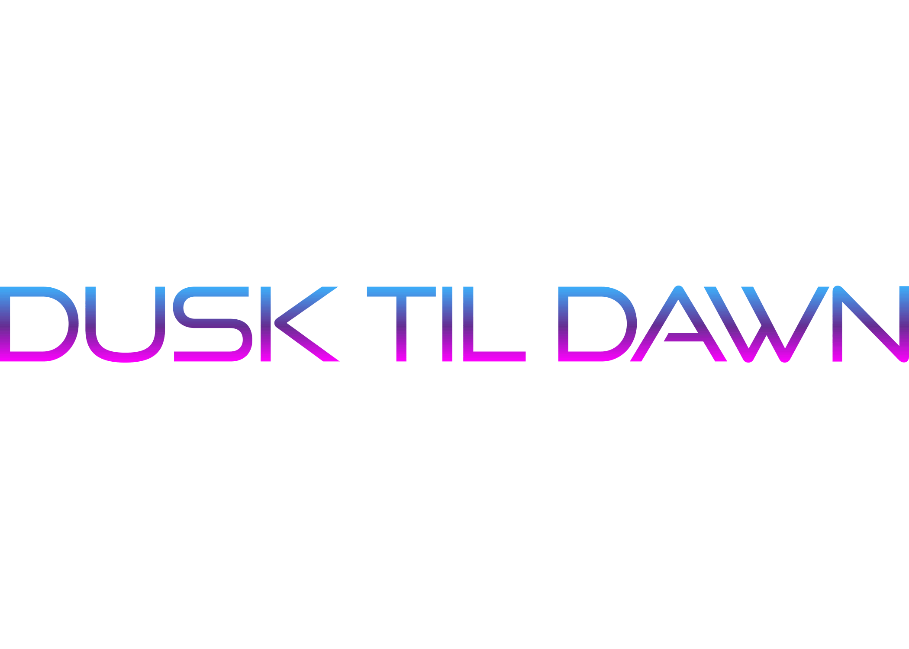

A bright technology logo concept built around bold contrast, rounded letterforms, and a futuristic startup tone.
Focus: Brand identity, digital logo design, color contrast, and scalable visual systems.
A civic cycling identity concept designed for clarity, movement, and an approachable public-service feel.
Focus: Logo design, advocacy branding, icon systems, and accessible visual communication.

A nightlife-inspired wordmark using neon color, glow, and horizontal motion to create an after-dark identity.
Focus: Event branding, expressive typography, digital color, and atmospheric logo direction.
A clean exploration-focused logo with a compact mark and word treatment for a digital product concept.
Focus: Product identity, logo balance, simple geometry, and flexible brand usage.
A pet-service pricing and brand concept designed to feel friendly, organized, and easy to understand.
Focus: Service branding, interface-friendly visuals, and approachable information design.